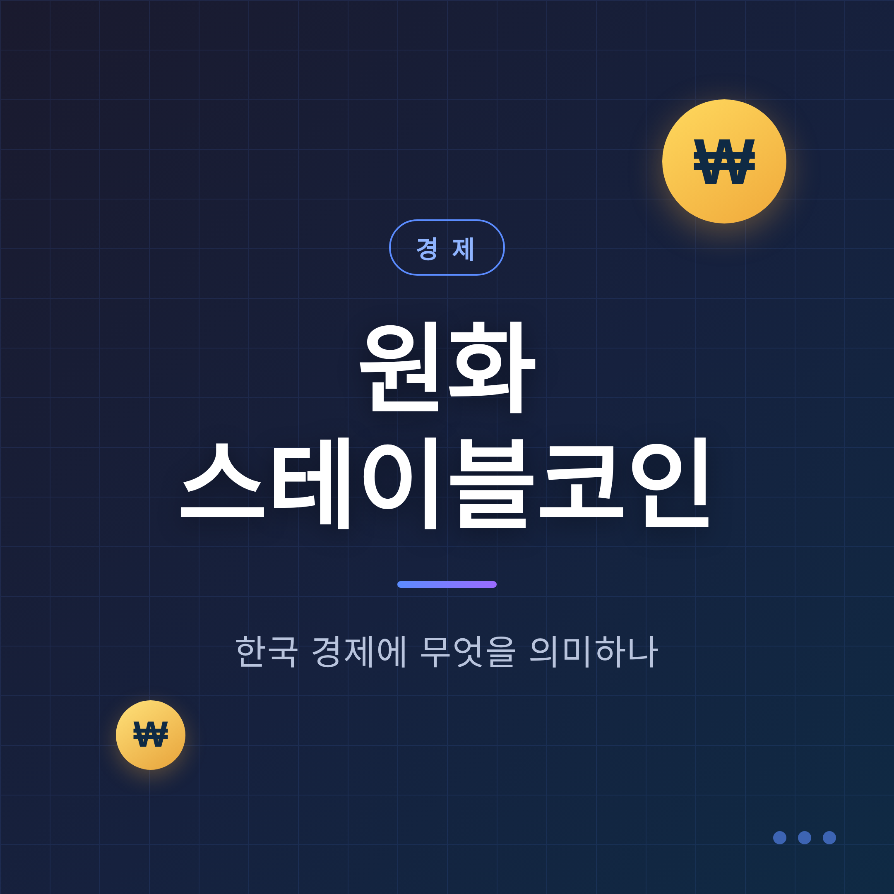
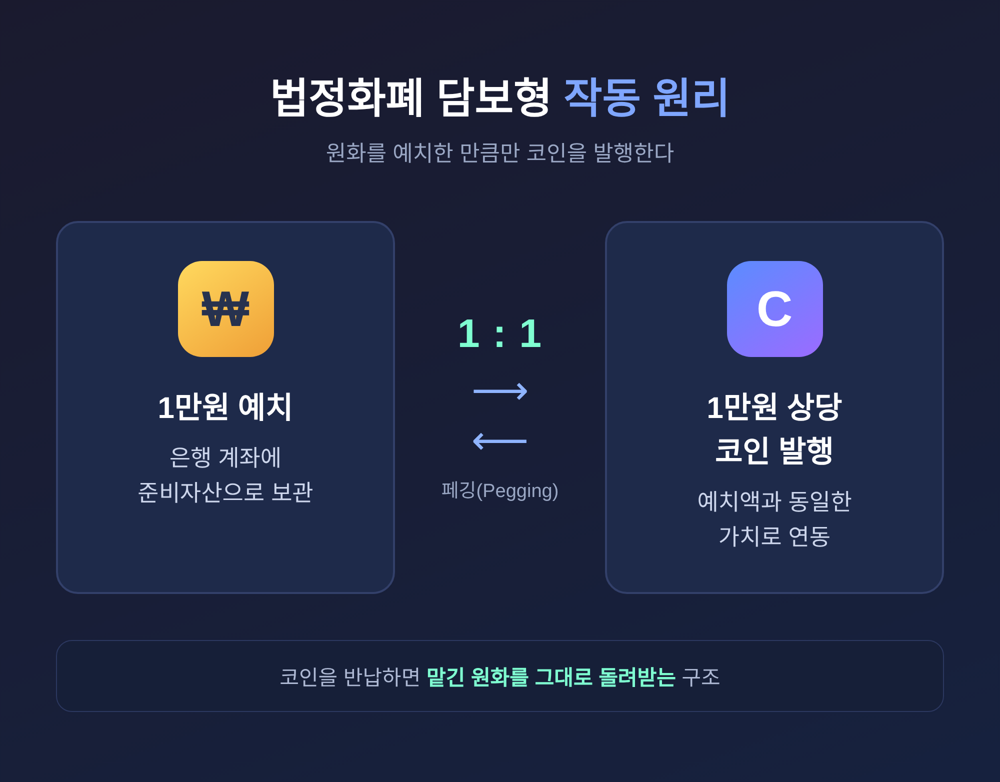
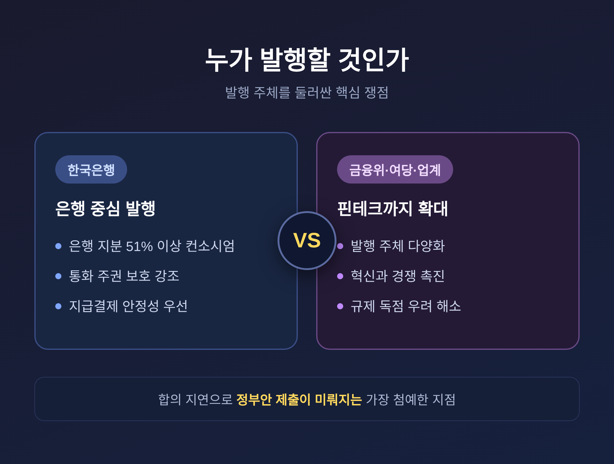

원화 스테이블코인, 한국 경제에 어떤 의미일까 — 기대와 우려 정리

요즘 경제 뉴스에서 '원화 스테이블코인'이라는 말이 부쩍 자주 보입니다. 이름은 들었는데 정확히 무엇이고, 우리 경제에 어떤 영향을 주는지는 정리가 잘 안 되셨을 수 있습니다. 이번 글에서는 개념부터 정부와 한국은행의 입장, 기대와 우려까지 한자리에 모아 보겠습니다.
먼저 핵심만 세 줄로 추려 드립니다.
- 원화 스테이블코인은 원화를 1:1로 예치하고 그에 연동해 발행하는 가상자산입니다.
- 정부는 '디지털자산 기본법' 2단계 입법으로 제도화를 추진 중이나, 발행 주체를 둘러싼 이견으로 일정이 미뤄지고 있습니다.
- 결제·송금 효율과 통화 주권이라는 기대가 있는 한편, 자본 유출과 통화정책 약화라는 우려도 만만치 않습니다.
스테이블코인이란 무엇인가
스테이블코인은 '안정적(Stable)'과 '코인(Coin)'을 합친 말입니다. 특정 자산의 가치에 연동해 가격을 일정하게 유지하도록 설계된 가상자산입니다.
비트코인이나 이더리움은 가격이 크게 출렁입니다. 스테이블코인은 그 반대입니다. 늘 같은 가치를 유지하도록 만들어졌습니다.
원리는 '페깅(Pegging)'이라 부릅니다. 코인의 가치를 달러 같은 기준 자산에 1:1로 고정하는 것입니다. 가장 보편적인 방식은 법정화폐 담보형입니다. 실제 달러를 은행 계좌에 예치하고, 그만큼 코인을 발행합니다. 대표 사례가 테더(USDT)와 USD코인(USDC)입니다. 1달러를 맡기면 1코인을 받고, 코인을 반납하면 1달러를 돌려받는 구조입니다.
원화 스테이블코인은 이 구조를 원화에 적용한 것입니다. 원화를 1:1로 예치해 준비자산으로 두고, 그에 연동된 코인을 발행하는 형태가 논의되고 있습니다.
여기서 한 가지는 구분해 두는 편이 좋습니다. 스테이블코인은 민간이 발행하는 가상자산입니다. 반면 CBDC(중앙은행 디지털화폐)는 중앙은행이 직접 발행하는 법정 디지털화폐입니다. 한국은행은 상업은행과 함께 '허가형 네트워크'에서 토큰화 예금 시범사업을 해 왔고, 이를 '공개 네트워크에서의 민간 스테이블코인 발행'과는 전혀 다른 문제로 봅니다.

한국은 지금 어디까지 왔나
원화 스테이블코인의 법제화는 '디지털자산 기본법(가칭)'에 담겨 추진되고 있습니다. 이는 가상자산이용자보호법의 2단계 입법에 해당합니다.
배경을 짚으면 이렇습니다. 국내에서는 약 9년간 사실상 코인 자체 발행이 금지돼 왔습니다. 이 법이 통과되면 원화 연동 스테이블코인의 국내 발행이 처음으로 허용될 수 있습니다.
금융위원회 정부안 초안에는 원화 스테이블코인 제도권 편입, 해외 스테이블코인의 국내 유통 요건 명시, 국내 ICO 허용 등이 담겼습니다. 안전장치도 함께 논의되고 있습니다. 발행사에 최소 자기자본 50억원 이상을 요구하고, 발행량과 준비자산 구성을 심의하는 관계기관 협의체를 두는 방안입니다.
다만 일정은 순탄치 않았습니다. 당초 이르면 2026년 1월 국회 발의, 여당은 2월 발의·3월 처리를 목표로 했습니다. 그러나 발행 주체를 둘러싼 한국은행과 금융위의 이견으로 2단계 입법이 거듭 연기됐습니다. 2026년 6월 3일 치러진 지방선거가 큰 변수로 거론됐고, 이 시점 기준으로 국회 통과는 아직 불확실합니다.
제도는 멈춰 있었지만, 민간은 먼저 움직였습니다. KB국민·신한·우리·농협·기업은행 등 8개 주요 은행이 원화 연동 스테이블코인 공동 개발을 발표했습니다. 2025년 9월에는 'KRW1'이 아발란체 블록체인 위에서 우리은행 에스크로에 원화를 1:1로 예치한 최초의 완전담보형 원화 스테이블코인으로 출시됐습니다(POC 단계).
가장 첨예한 쟁점 — 누가 발행할 것인가
이 주제에서 의견이 가장 날카롭게 갈리는 지점이 발행 주체입니다. 은행으로 한정할 것인가, 핀테크까지 열 것인가. 양쪽 모두를 보겠습니다.
한국은행은 은행 중심 발행을 선호합니다. 통화 주권과 지급결제 안정성이 훼손될 수 있다는 이유에서입니다. 구체적으로는 은행이 지분 51% 이상을 보유한 컨소시엄 형태를 사실상 전제로 둡니다. 은행만이 안정성을 보장하고 금융 시스템을 지킬 수 있는 주체라는 논리입니다. 2026년 4월에는 한은이 '은행 중심 발행'을 못박은 밑그림을 제시한 것으로 보도됐습니다.
반대편에는 금융위원회와 여당, 업계, 학계가 있습니다. 금융위는 보다 핀테크 친화적인 규제를 선호합니다. 업계와 학계는 발행 주체를 은행으로 한정하면 혁신이 막히고 경쟁이 제한될 수 있다고 우려합니다.
절충도 시도됐습니다. 금융위가 '은행이 지분 50%+1주를 보유한 컨소시엄에 우선 허용'하는 방안을 마련해 한은의 우려를 상당 부분 반영했다는 보도도 있습니다.
예전엔 '코인을 허용할 것이냐'가 논점이었습니다. 지금은 '누가, 어떤 지분 구조로 발행할 것이냐'로 무게중심이 옮겨졌습니다. 바로 이 발행 자격에 대한 합의가 늦어지면서 정부안 제출이 미뤄진 것입니다.

기대되는 점
원화 스테이블코인에 기대를 거는 쪽의 논거는 분명합니다.
첫째는 통화 주권입니다. 달러 기반 스테이블코인이 국내에 확산되는 흐름을 막고, 원화 기반 디지털 결제수단을 갖추자는 것입니다.
둘째는 결제와 송금의 효율입니다. 가치가 안정적이고, 송금 비용이 낮으며, 결제 속도가 빠릅니다. 글로벌 결제 인프라에 원화가 자연스럽게 편입될 수 있다는 기대도 있습니다.
셋째는 지급 인프라의 확장입니다. 선불 전자지급수단과 비슷한 형태로 일상 결제나 플랫폼 정산 수단으로 넓혀갈 수 있다는 전망입니다.
여기에 제도화 자체의 필요성을 강조하는 목소리도 있습니다. 지금은 국내 발행인에 대한 법적 책임과 이용자 보호 장치가 사실상 없습니다. 그래서 경쟁력 여부와는 별개로, 제도화는 '선택이 아닌 필수'라는 지적입니다.
우려되는 점
좋은 면만 있는 것은 아닙니다. 우려도 무게가 가볍지 않습니다.
먼저 통화정책이 약해질 수 있습니다. 민간이 원화와 같은 가치를 지닌 가상자산을 발행하면, 사실상 '사설 화폐'처럼 기능할 수 있습니다. 무분별하게 발행되면 시중 유동성이 늘고, 통화공급량 관리가 복잡해지며, 금리가 작동하는 경로가 흔들릴 수 있습니다.
자본 유출 우려는 가장 강하게 제기된 지점입니다. 이창용 한국은행 총재는 2025년 7월 ECB 연례 통화정책 포럼에서 분명히 경고했습니다.
"규제 없는 원화 스테이블코인 허용은 달러 기반 스테이블코인으로의 전환을 가속화해 자본 이탈을 유발하고, 한국의 자본유출입 규제를 약화시킬 수 있다."
그는 현재 한국이 외국인 투자 유입보다 내국인의 해외 자금 유출이 더 많은 상황이라는 점도 함께 짚었습니다.
금융안정에 대한 우려도 있습니다. 스테이블코인 가치가 연동 자산과 벌어지는 '디페깅', 대규모 상환 요구가 몰리는 '코인런'이 대표적입니다. 은행 시스템에도 영향이 갈 수 있습니다. 코인 준비금이 늘수록 은행 예금이 줄어 수익성이 나빠질 수 있다는 분석입니다.
기술에 대한 회의도 남아 있습니다. 이창용 총재는 블록체인이 자금세탁 방지에 효과적이라는 주장에 대해 "실제 구현 가능한지 확신이 없다"고 밝혔습니다.
그래서 가계와 소비자에게는
결국 우리에게 가까운 질문은 이것입니다. "내 일상에는 무엇이 달라지는가."
은행과 핀테크가 점진적으로 도입한다면, 일상 결제나 플랫폼 정산, 송금에 쓰일 수 있습니다. 빠르고 저렴한 송금·결제는 소비자에게 직접적인 편익입니다.
다만 한계도 솔직히 봐야 합니다. 원화는 기축통화가 아니어서 국제 결제 수요가 제한적입니다. 도입돼도 실질 효용이 달러 스테이블코인만큼 크지 않을 수 있다는 회의론이 있습니다. '사용처'를 어떻게 확보하느냐가 관건이라는 지적입니다.
소비자 보호의 공백도 아직 메워지지 않았습니다. 제도화 전에 디페깅이나 코인런이 발생하면 그 피해는 소비자가 떠안을 수 있습니다. 그래서 준비자산 규제, 자기자본 요건(50억원), 관계기관 협의체 같은 안전장치가 소비자 보호의 핵심으로 꼽힙니다.
한편으로는 더 근본적인 물음도 제기됩니다. 원화 스테이블코인이 정말 소비자 편익을 위한 것인지, 아니면 발행 주체의 이해와 더 맞닿아 있는지를 묻는 비판적 시각입니다.
정리하면 이렇습니다.
원화 스테이블코인은 기대와 우려가 팽팽히 맞선 주제입니다. 결제 효율과 통화 주권이라는 가능성이 한쪽에, 자본 유출과 통화정책 약화라는 위험이 다른 쪽에 있습니다. 어느 한쪽으로 쉽게 기울 사안이 아닙니다.
— 결국 관건은 '얼마나 빨리'가 아니라 '얼마나 안전하게'입니다.
제도가 사람을 지키는 쪽으로 설계된다면, 그때 비로소 이 새 화폐는 우리 일상에 자리를 잡을 수 있을 것입니다.